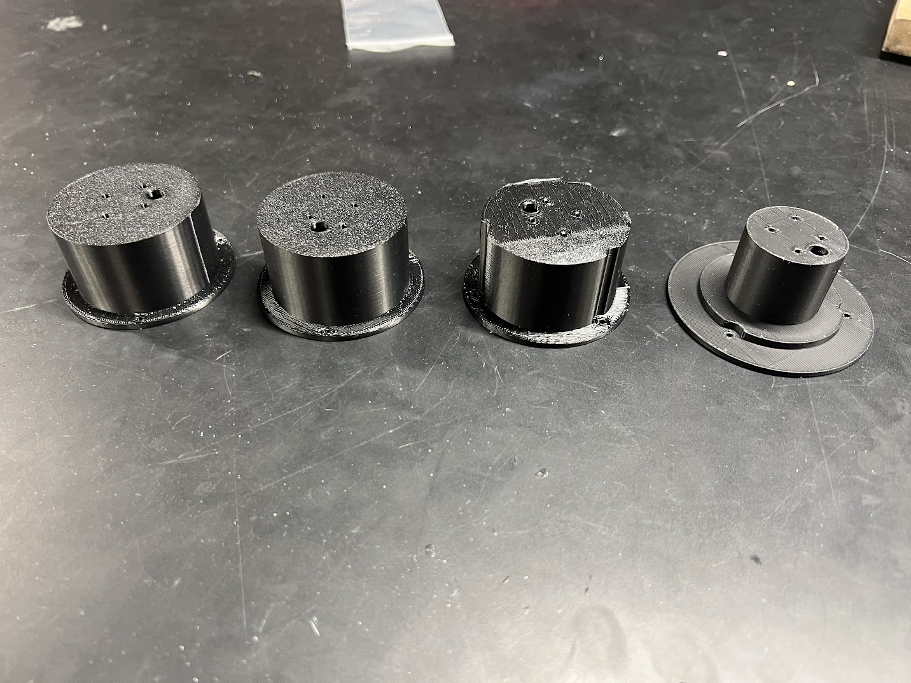

Back
Twoobe
"Twoobe" is a work in progress 1lb Plastic Ant robot and is inspired by the NHRL contestant
Noob Tube. I am working on this robot with my friend Ryan Zhou.
Unlike most other combat robots, Noob Tube's weapon is also its drive. Its chassis is a UMHW tube with a rough metal attachment serving as its weapon.
With soft squishy bristles that actually prevent the wheels from spinning,
the body of the Noob Tube spins instead when the motors are powered. This creates a fast spinning weapon that covers the length of the robot,
and creates some chaotic, unpredictable, robot movements. Twoobe intends to be a scaled-down version of this concept.
The robot consists of a few major parts: The tube, end caps, wheels, and electronics (which are housed inside the tube). The end caps of the tube
house the motors, keep the electronics contained and connect the wheels to the chassis.
We began by working on the CAD for the tube and caps. These two parts are to be made alongside each other as the caps are expected to fit snugly inside the tube.
Below are the 3D-printed iterations of the cap we have so far.

Cap prototypes for Twoobe. Ordered with first on the left and most recent on the right.
The protruding part of the cap is designed to house the motor sit snugly inside the tube, while the wider flat part, is screwed down to the ends of the tube to keep it in place.
Some of the major changes between the iterations are the printing infill, the locations
of the screw holes, and the thickness of the motor housing.